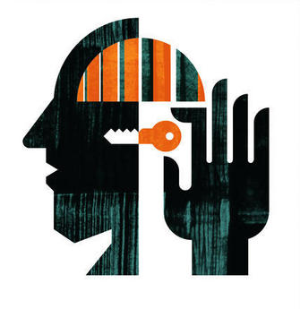

Las enfermedades mentales
Las enfermedades o trastornos mentales son afecciones que impactan el pensamiento, los sentimientos, el estado de ánimo y el comportamiento. Pueden ser ocasionales o duraderas (crónicas). Pueden afectar la capacidad de relacionarse con los demás y funcionar cada día.

-
Tipos de trastornos mentales:
-
 Otros tipos de trastornos mentales:
Otros tipos de trastornos mentales:- Trastornos de ansiedad, incluyendo trastorno de pánico y fobias
- Trastornos de la personalidad
- Trastorno de estrés post-traumático
- Trastornos psicóticos, incluyendo la esquizofrenia